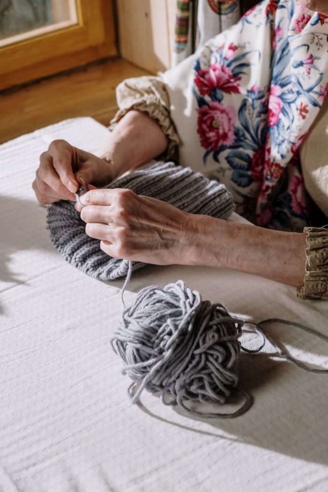
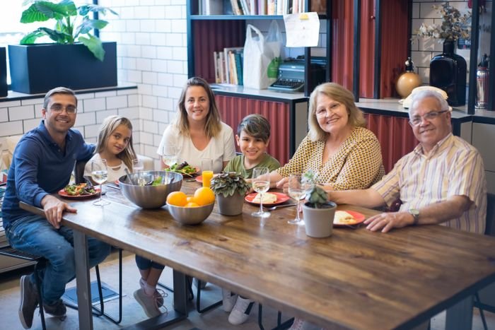
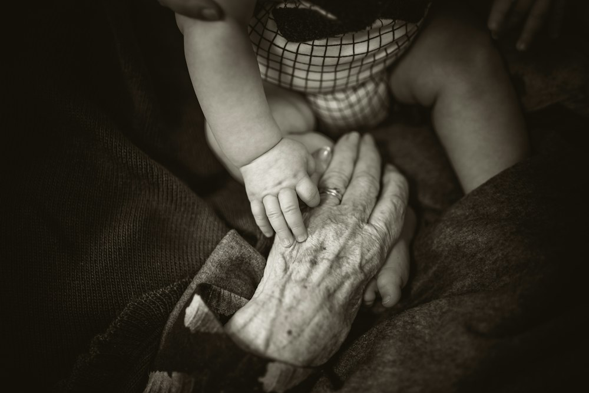
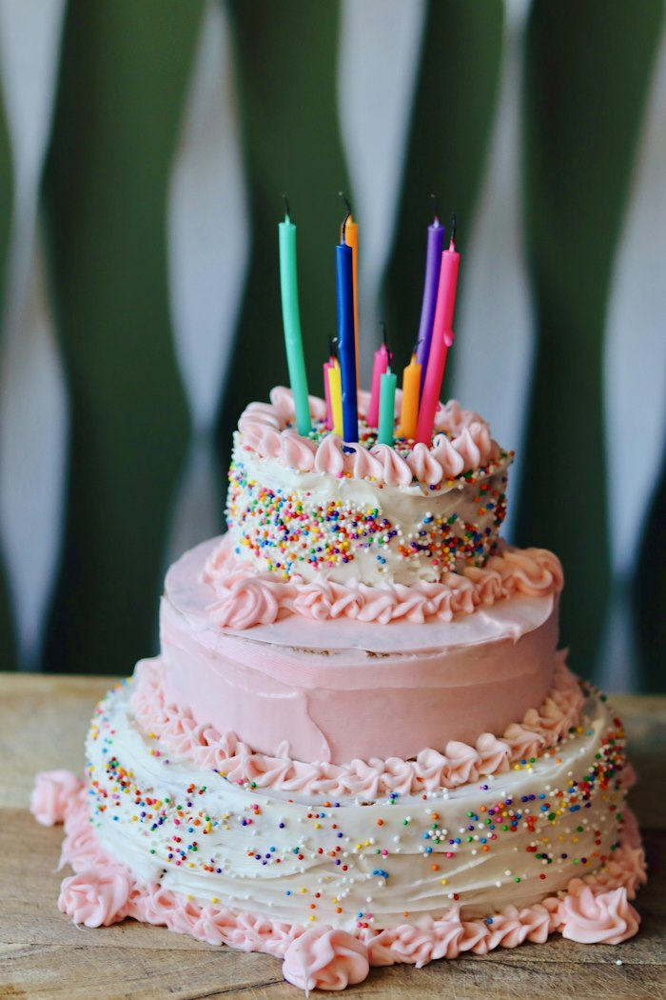
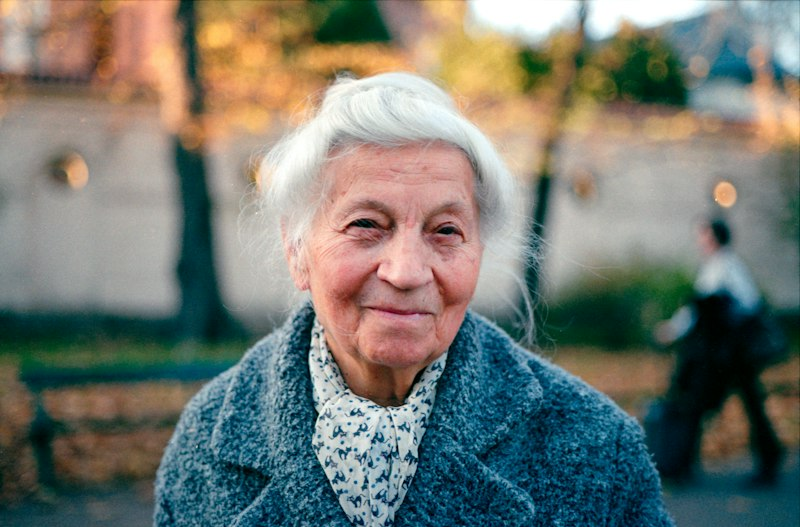

You
🕛 12:0012:00Arrive by noon
Coats off, phones on silent, find a seat. The garden gate shuts at 12:20.
Shhh, it's a surprise. Please don't post, tag or text about it until Nani has blown out her candles.
Shhh… it's a surprise
A surprise lunch for the woman who fed us all. Come for the soup, stay for the stories, and please, please keep it quiet.
The secret plan
Nani believes she is going to a quiet early-birthday lunch with Isa. Everyone else is hiding in the Garden Room. This is how we pull it off.
You
🕛 12:00Coats off, phones on silent, find a seat. The garden gate shuts at 12:20.
Nani
🕧 12:30She thinks it's soup for two. It is not. Everyone she has ever fed is waiting.
Come through the side gate on Pear Street. Noor hands out place cards and a glass of elderflower fizz at the door.
From here on it's whispers only. Latecomers wait at the gate with Mateo and slip in during the toast.
Kit, posted at the bay window, texts Isa. Everyone stands, lights go down, and nobody giggles (Uncle Ben, this means you).
Nani walks in expecting soup for two. Wait for Isa's nod, then all together: "Happy birthday, Nani!"
Sunday 22 November
Four hours, four small courses, no rushing. Nani will want to talk to every single person, so we've left room for that.
Be through the gate by 12:00; Nani walks in at 12:30. The half hour in between is laid out in the secret plan.
Noor says a few words. Nani says many more.
Four small courses, passed around the table the way she always did it. Menu below.
Isa reads a few notes from the memory wall, then the pink cake arrives. Eight candles, for safety.
Everyone squeezes in. Tall people at the back, please. Nani sits at the front, in charge.
Isa drives Nani home with a bag of leftovers she didn't ask for. Everyone else: the washing-up is done.
Your Sunday best, worn softly. Nani's favourite colour is rose, and she says black is for funerals and bin bags. Pastels, florals and a cardigan are perfect.
From the biscuit tin
Isa found these in a shortbread tin last spring. Tap a year, or slide the line of washing sideways.
Born at the Port Alder cottage hospital in a November gale, the third of five. Her mother said she arrived laughing, and nobody has ever proved otherwise.
📍 Port Alder
She married Tomas on a rainy Saturday in a dress she sewed from her mother's curtains. They danced in the registry office car park because the hall had flooded.
💕 Registry office, Port Alder

Six stools, one soup of the day, one price, no menu. She ran the lunch counter behind the old post office for thirty-one years and taught half the street to knit between orders.
🍲 Orchard Walk

Isa arrives in 1999, then Mateo (2002), Noor (2006) and, last of all, Kit (2011). Sunday lunch for fourteen becomes the law of the family, and nobody is excused.
👥 Her kitchen table
Still the first to hug and the last to leave, still calling everyone "my heart". She says she's only seventy-nineteen. We're taking her word for it, and feeding her anyway.
❤️ Sunday 22 November
Cooked by Marta, remembered by Rosa
Chef Marta Quill at Fennel & Fig has rebuilt Nani's Sunday table from memory, notes and one very stained index card.
About presents
Bring a recipe card or a story instead.
💝If you'd still like to give something, there is a donation box for the Port Alder Community Kitchen by the guest book. Nani would approve.

Leave a memory
Write one memory of Nani. It pins up instantly, and Isa will read a few aloud at 14:45. Be as soppy as you like.
Nothing here yet. Be the first to pin one up.
Getting there
The Garden Room is at the back of Fennel & Fig, 6 Orchard Walk, in what used to be the post office. Nani knows the front. You'll be using the back.
Not to scale. Dotted line: the walk from the bus stop to the gate.
Access for everyone
A level path from the gate, a wide automatic door, and no steps to the Garden Room or the toilets.
Next to the room, with a grab rail and an alarm cord. Ten paces from Nani's table.
Chairs with backs and arms at every table, cushions on request, and nobody stands for the toast unless they want to.
Covers the top table and the speeches. Switch your hearing aid to T and you won't miss a word.
Menus and recipe cards in a type size even Nani approves of. Ask for a magnifier at the door.
A calm table by the window, with a view of the garden, for anyone who needs a breather. Assistance dogs are very welcome.
The favour of a reply
Tell us who's coming, what you eat, and whether you'll bring a memory. It takes two minutes, and Marta needs the numbers.

Little questions
If you're not through the gate by 12:20, text Mateo on 555-0147 and wait by the wisteria. He'll slip you in during the toast. If Nani is early, Kit spots the car from the bay window and heads out to stall her in the car park with a very long story about parking.
Please do. All ages are welcome, and there's a colouring table, two high chairs and a box of Nani's buttons to sort. Tell us how many in the RSVP so Marta can plan small portions.
On Pear Street or in the Tannery car park (free on Sundays). Never on Orchard Walk: Nani lives two streets away and takes that road to the shops. Four blue-badge bays are held by the gate.
Of course. Just raise the number of places in the RSVP and add their name in the note. If they've never met Nani, they will have by 12:35.
Yes. Kit will hold up a tablet during the toast at 12:45 and again for the cake. Write "video call" in the "Anything else for the hosts?" box of the RSVP and we'll send a private link on the Friday before.
Short ones, and only from volunteers. Noor opens at 12:45 and Isa reads from the memory wall at 14:45. If you'd like two minutes of your own, say so in the RSVP.
Then she'll love it. Hand it to Isa quietly at the door and it goes home with Nani after lunch, so she doesn't have to carry it to the table.
Come back to the RSVP and change your reply, or call Isa on 555-0142 by Sunday 15 November. After that Marta has already ordered the fish.

Dear all of you,
Nani has fed every one of us at some point: at her counter, at her kitchen table, over the phone while we were meant to be revising.
For her 80th we'd like to put her at the head of a table for once, and let somebody else do the washing-up. Come hungry. Bring a story. Keep the secret.
With all our love,
📞Questions before the day? Isa 555-0142
📲On the day: Mateo 555-0147
✉️rosa80@example.com — and not a word to Nani.
Icons: with icons (withicons.com), MIT. Type: Fraunces and Caveat from Google Fonts. The people, places and events on this page are fictional.